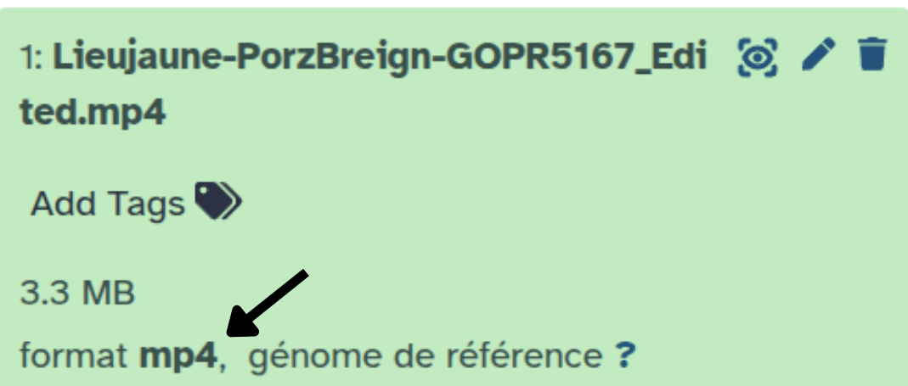
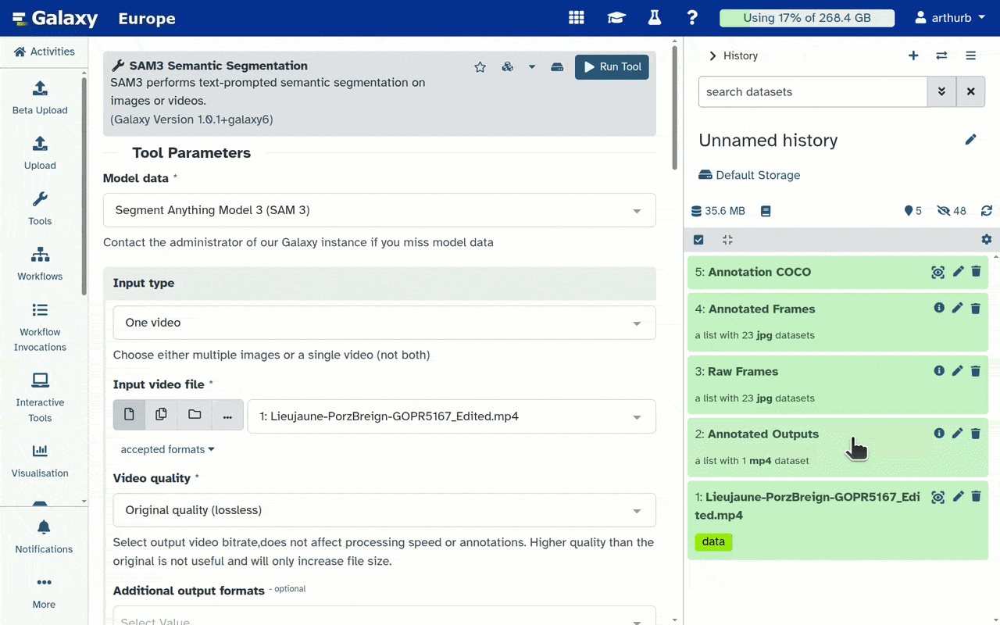

Dans ce tutoriel, nous allons explorer un pipeline complet pour l’annotation d’images et de vidéos d’espèces marines. Nous utiliserons comme exemple une vidéo issue du projet Moorev, découpée et disponible sur Zenodo.
Ce pipeline se décompose en deux grandes étapes :
Annotation automatique par prompt textuel avec SAM3 Semantic Segmentation ( Galaxy version 1.0.1+galaxy6)
Correction et validation des annotations avec Edit COCO Annotation ( Galaxy version 1.0.0+galaxy0)
MOOREV : Microclimats et outils d’observation des réponses du vivant sur les fonds marins
Observer les interactions entre espèces marines face aux gradients microclimatiques sur l’estran
Le projet MOOREV, porté par Nadine Le Bris (Sorbonne Université, Station Marine de Concarneau),
avec le soutien du Muséum National d’Histoire Naturelle, du CNRS et de la Fondation de France,
a été lancé en 2022. Son objectif : mieux comprendre et faire comprendre les effets des
perturbations climatiques sur la biodiversité du littoral.
L’approche repose sur des méthodes d’imagerie sous-marine pour observer les espèces benthiques
à l’échelle individuelle, sur différents habitats de l’estran. Des groupes de scolaires
répètent des acquisitions de données sur leurs sites d’étude, labellisés par le programme
Aires Marines Éducatives de l’Office Français de la Biodiversité, au fil des cycles de marée,
des saisons et des années.
Le projet associe chercheurs et professionnels de l’éducation à l’environnement, et est
co-construit avec des classes et leurs enseignants, en utilisant le littoral comme laboratoire
naturel. À terme, il vise à soutenir la mise en œuvre de mesures de protection et de
conservation, en tenant compte des interactions entre changement climatique et socio-écosystèmes
marins.
La vidéo utilisée dans ce tutoriel est un extrait issu directement du projet Moorev, disponible sur Zenodo. Cet extrait a été sélectionné car il permet d’illustrer la majorité des fonctionnalités des outils présentés.
En pratique: Charger la vidéo dans Galaxy
Créez un nouvel historique pour ce tutoriel (par exemple : “Annotation Moorev”)
To create a new history simply click the new-history icon at the top of the history panel:
Click on galaxy-pencil (Edit) next to the history name (which by default is “Unnamed history”)
Type the new name
Click on Save
To cancel renaming, click the galaxy-undo “Cancel” button
If you do not have the galaxy-pencil (Edit) next to the history name (which can be the case if you are using an older version of Galaxy) do the following:
Click on Unnamed history (or the current name of the history) (Click to rename history) at the top of your history panel
Click galaxy-uploadUpload at the top of the activity panel
Select galaxy-wf-editPaste/Fetch Data
Paste the link(s) into the text field
Press Start
Close the window
Vérifiez que le fichier apparaît en vert dans l’historique avant de continuer
Vérifiez le type de données
Le type de données est attribué automatiquement par Galaxy. Comme la majorité des outils l’utilisent pour filtrer leurs entrées, il est important de s’assurer qu’il est correct. Dans notre cas, vérifiez que le type est bien mp4. Si ce n’est pas le cas, l’import a peut-être rencontré une erreur, vous pouvez modifier le type manuellement.

Click on the galaxy-pencilpencil icon for the dataset to edit its attributes
In the central panel, click galaxy-chart-select-dataDatatypes tab on the top
In the galaxy-chart-select-dataAssign Datatype, select mp4 from “New Type” dropdown
Tip: you can start typing the datatype into the field to filter the dropdown menu
Click the Save button
Annotation automatique avec SAM3
SAM3 est un modèle de segmentation guidé par texte. Il détecte et segmente automatiquement les objets correspondant à votre prompt, sans nécessiter d’annotations préalables.
Si vous souhaitez en savoir plus sur SAM3 et ses paramètres, consultez le tutoriel dédié :
Tutoriel SAM3
En pratique: Paramétrage de SAM3
SAM3 Semantic Segmentation ( Galaxy version 1.0.1+galaxy6) avec ces paramètres :
param-toggle“Normalize outputs?” : No (par défaut)
Cliquez sur Run Tool
Commentaire: Temps de traitement
Le traitement peut prendre plusieurs minutes selon la longueur de la vidéo et les ressources du serveur. Patientez jusqu’à ce que les sorties apparaissent en vert dans l’historique.
Une fois terminé, vous obtenez dans votre historique :
5: Annotation COCO : annotations.json — les masques de segmentation au format COCO
4: Annotated Frames : la collection d’images extraites (annotées)
3: Raw Frames : la collection d’images extraites (non annotées)
2: COCO Extracted Frames : la vidéo annotée pour vérification visuelle
Vérifiez visuellement les résultats en cliquant sur galaxy-eye sur Annotated Outputs

Commentaire: Limites de SAM3
Comme vous pouvez le constater, toutes les annotations ne sont pas parfaites, les faux positifs sont le problème le plus fréquent. C’est pourquoi l’étape suivante de correction et validation est indispensable.
Correction et validation des annotations
Nous allons voir comment corriger les annotations avec Edit COCO Annotation, puis vérifier le résultat avec COCO Annotation Visualizer.
Corriger avec Edit COCO Annotation
L’outil Edit COCO Annotation permet de modifier les annotations COCO sans avoir à ouvrir les images. Il propose trois modes :
Keep : garder uniquement les IDs listés (supprimer tous les autres) — utile quand peu d’IDs sont à conserver, permet aussi de les renommer
Remove : supprimer uniquement les IDs listés
Rename : renommer les IDs listés sans en supprimer d’autres
En pratique: Garder, supprimer ou renommer des annotations
Edit COCO Annotation ( Galaxy version 1.0.0+galaxy0) avec ces paramètres :
param-select“Mode” : Keep - keep only listed IDs (remove all others)
param-repeat“1: Track to keep”
param-text“Track IDs” : 0,4-6
param-text“Rename” : Gobiusculus flavescens
param-text“Frame min” : Empty (par défaut)
param-text“Frame max” : Empty (par défaut)
param-repeat“2: Track to keep”
param-text“Track IDs” : 2
param-text“Rename” : Crenilabre
param-text“Frame min” : Empty (par défaut)
param-text“Frame max” : Empty (par défaut)
param-text“Frame max” : Empty (par défaut)
Commentaire: Résultat équivalent en deux étapes
Il est aussi possible d’obtenir le même résultat en deux étapes : utiliser Remove pour supprimer les IDs 1 et 3, puis Rename pour renommer les groupes restants.
À noter : SAM3 peut parfois attribuer le même Track ID à deux objets différents à des moments distincts de la vidéo. C’est pour cette raison que les paramètres Frame min et Frame max ont été ajoutés.
Une fois terminé, vous obtenez dans votre historique :
54: Edited COCO annotations : le fichier JSON au format COCO, modifié selon les paramètres renseignés ci-dessus
Visualiser les annotations avec COCO Annotation Visualizer
Cet outil permet de visualiser facilement un fichier JSON au format COCO superposé sur une vidéo ou des images. Nous l’utilisons ici pour vérifier nos annotations après correction.
En pratique: Visualiser les annotations COCO
COCO Annotation Visualizer ( Galaxy version 1.0.0) avec ces paramètres :
param-file“Input video file” : 1: Lieujaune-PorzBreign-GOPR5167_Edited.mp4
Vous savez maintenant utiliser ce pipeline complet pour annoter des vidéos d’espèces marines :
SAM3 génère automatiquement des annotations à partir d’un simple prompt textuel
Edit COCO permet de nettoyer rapidement les annotations en gardant, supprimant ou renommant des IDs de tracks
COCO Annotation Visualizer permet de vérifier visuellement les résultats à chaque étape
Ce pipeline est réutilisable pour d’autres espèces ou d’autres projets d’imagerie marine — il suffit d’adapter le prompt et les paramètres de confiance de SAM3.
You've finished the tutorial
Please also consider filling out the Feedback Form as well!
Points clés
L’IA fait le gros du travail d’annotation, mais un œil humain reste indispensable pour vérifier et corriger.
Une fois mis en place, ce pipeline est réutilisable pour d’autres espèces ou d’autres projets.
Questions fréquentes
Vous avez des questions sur ce tutoriel ? Consultez les pages FAQ disponibles et les canaux d'assistance.
Further information, including links to documentation and original publications, regarding the tools, analysis techniques and the interpretation of results described in this tutorial can be found here.
Retours
Utilisation de ce matériel en tant que formateur ? Partagez votre expérience.
Avez-vous utilisé ce matériel en tant qu'apprenti ou étudiant ? Cliquez sur le formulaire ci-dessous pour nous laisser votre avis
Hiltemann, Saskia, Rasche, Helena et al., 2023 Galaxy Training: A Powerful Framework for Teaching! PLOS Computational Biology 10.1371/journal.pcbi.1010752
Batut et al., 2018 Community-Driven Data Analysis Training for Biology Cell Systems 10.1016/j.cels.2018.05.012
@misc{imaging-Annotation_AI_Pipeline,
author = "Arthur Barreau and Yvan Le Bras and Nadine Le Bris",
title = "Pipeline d'annotation d'espèces marines par IA (Project Moorev - Marine) (Galaxy Training Materials)",
year = "",
month = "",
day = "",
url = "\url{https://training.galaxyproject.org/training-material/topics/imaging/tutorials/Annotation_AI_Pipeline/tutorial_FR.html}",
note = "[Online; accessed TODAY]"
}
@article{Hiltemann_2023,
doi = {10.1371/journal.pcbi.1010752},
url = {https://doi.org/10.1371%2Fjournal.pcbi.1010752},
year = 2023,
month = {jan},
publisher = {Public Library of Science ({PLoS})},
volume = {19},
number = {1},
pages = {e1010752},
author = {Saskia Hiltemann and Helena Rasche and Simon Gladman and Hans-Rudolf Hotz and Delphine Larivi{\`{e}}re and Daniel Blankenberg and Pratik D. Jagtap and Thomas Wollmann and Anthony Bretaudeau and Nadia Gou{\'{e}} and Timothy J. Griffin and Coline Royaux and Yvan Le Bras and Subina Mehta and Anna Syme and Frederik Coppens and Bert Droesbeke and Nicola Soranzo and Wendi Bacon and Fotis Psomopoulos and Crist{\'{o}}bal Gallardo-Alba and John Davis and Melanie Christine Föll and Matthias Fahrner and Maria A. Doyle and Beatriz Serrano-Solano and Anne Claire Fouilloux and Peter van Heusden and Wolfgang Maier and Dave Clements and Florian Heyl and Björn Grüning and B{\'{e}}r{\'{e}}nice Batut and},
editor = {Francis Ouellette},
title = {Galaxy Training: A powerful framework for teaching!},
journal = {PLoS Comput Biol}
}
Références
These individuals or organisations provided funding support for the development of this resource
Questions: